| Last Modified: 11-07-2025 | 6.11:8.1.0 | Doc ID: RM100000002HG3K |
| Model Year Start: 2024 | Model: Tacoma | Prod Date Range: [12/2023 - ] |
| Title: INTRODUCTION: WORK NOTICES AND PRECAUTIONS: PRECAUTIONS FOR REPAIRING ALUMINUM ALLOY PANELS; 2024 - 2026 MY Tacoma Tacoma HV [12/2023 - ] | ||
PRECAUTIONS FOR REPAIRING ALUMINUM ALLOY PANELS
- Aluminum is nontoxic, but it is very light. As sanding work tends to cause metal particles to disperse into the air, it is important for technicians to protect their lungs and eyes from the dust.
- When repairing aluminum alloy panels, refer to the following information and wear protective equipment appropriate to the type of work being performed.
WORK SAFETY
| 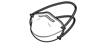 |
Dust Mask |
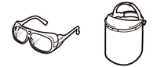 |
Safety Glasses/Face Protector |
| 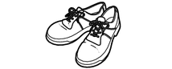 |
Safety Shoes (Static Type) |
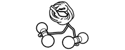 |
Ear Plugs |
|
Cotton Gloves |
Leather Gloves |
PRECAUTION
(a) Galvanic corrosion
- Galvanic corrosion is a phenomenon where corrosion occurs to the electric potential difference between metal compounds when metals of differing composition contact each other through moisture.
- When using equipment used for steel plate repairs without cleaning it first, iron particles may remain on the aluminum alloy panel and corrosion on the aluminum side may occur. As a result, the following countermeasures are necessary.
<Countermeasure>
- Tools and materials in contact with the substrate of the aluminum alloy panel should be separated from those used for steel panel repair or cleaned and used once sterile.(hammers, dollies, sandpaper, etc.)
- Prevent iron particles from dispersing into the work area.
(b) Dust explosion
- Dust explosion is the phenomenon where an explosion is caused by ignition through sources such as static electricity when a flammable fine dust floats through the air in a certain volume. Dust explosions occur when "dust", "oxygen" and the "ignition source" are within a certain condition.
- When compared to dust generated when sanding steel panels, aluminum alloy panels contains flammable properties and is possible to result in a dust explosion. Therefore, the following countermeasures are recommended for when repairing aluminum alloy panels.
<Countermeasure>
- Separate work areas so that dust does not contaminate other areas, and refrain from blowing dust or cleaning with an air blower.
- Ensure the work area is cleaned appropriately so that no dust deposits, and use an explosion-proof type dust collector, or an anti-static broom when cleaning.
- Do not weld near the aluminum alloy panel repair area so as not to bring a potential ignition source close to any dust.
- When disposing of the dust (container) collected when cleaning, etc., make sure that the technician is properly grounded, handle the container securely and dispose of it as industrial waste.
(c) Crack
- When compared with steel, aluminum has the characteristic of being more easily when deformed due to damage.
- When repairing, there is a risk of cracking if the aluminum is forcibly returned to its original state. Therefore, carefully check the panel shape and amount of deformation before starting work.
INFLUENCE ON CHARACTERISTICS AND REPAIRS
(a) Oxide film
- If an aluminum substrate is left as is, an oxide
film is formed naturally to prevent corrosion. As a
result, even if heat is applied during repairs, it is
not necessary to apply anti-rust treatment to the
back of the panel as long as it is a flat surface.
NOTICE:
- It is possible for the oxide film to be destroyed in areas where corrosive substances are subject to enter and accumulate, such as the edges of panels (hemming areas, etc.), nonplanar parts (concave shapes, etc.) and parts where there are no gaps between adjacent parts. Therefore, make sure to apply anti-rust agent to these areas.
- The oxide film may hinder the adhesive quality of paint. Therefore, do not leave the aluminum substrate as is after completing repairs and make sure to apply primer as soon as possible.
(b) Annealing
- Annealing is a phenomenon in which distortion of the internal structure of a panel that has been hardened through damage (deformation) is softened and removed through heating.
- Before performing repairs, heating the damaged area to approximately 200°C (for the 6000 series) ahead of time and allowing it to cool naturally helps to eliminate the hardness in the panel and improves crack resistance and serviceability.
- When compared with steel, the effects of
annealing are easily obtained for aluminum due to the
relatively low temperature. As a result, it is quite
effective when utilized for repairing deformation of
varying degree.
NOTICE:
Make sure that the temperature is controlled carefully and does not exceed the Heating Limit Temperature as excessive heating will result in a drastic deterioration in durability.
|
Types of aluminum alloys |
Annealing temperature |
Heating Limit Temperature |
Melting temperature |
|---|---|---|---|
|
5000 series |
250 °C (482 °F) |
300 °C (572 °F) |
About 650 °C (1202 °F) |
|
6000 series |
200 °C (392 °F) |
250 °C (482 °F) |
(c) Heat conduction
- Aluminum has good heat conductivity. As a result, heat disperses in a wide range when heated.
- When heating an aluminum alloy panel, it is possible to control the dispersion of heat and ensure that extra heat does not spread into unwanted areas by covering the target area with a wet cloth.
- There are cases where the heat dispersion range is larger and hotter than expected. Therefore, take care not to burn yourself when touching the panel surface after heating.
PANEL REPAIR WORK EXAMPLES
- Examples of repair work for aluminum alloy panels are introduced below.(Specific procedures are omitted.)
(a) Heat repairs for small dents
- Using the thermal expansion of the aluminum material, this method pushes the dents out by heating (around 100°C) and repairs the damage.
- This is effective for minor dents in planar panel surfaces, but can be difficult to repair concave surfaces, press lines, or dents part of bends or creases.
|
*a |
Repair Possible Example |
*b |
Repair Not Possible Example |
|
*c |
Press Line |
- |
- |
<Example Equipment>
| 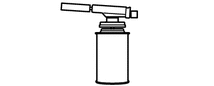 |
Heating Equipment |
 |
Temperature Management Material |
NOTICE:
- Make sure that the temperature is controlled so that it does not exceed the Heating Limit Temperature.
- When heating, work from the outside of the dent and work towards the center.
(b) Pulling repairs for large dents
- Similar to repairs for steel panel, pulling repairs are performed by welding or gluing special pins to the damaged panel surface and dropping the high surface while pulling out the dented area.
- In order to attach the special welding pins, special equipment used for aluminum is required.
- If the damage area is deformed into a sharp angle, there is a possibility that the aluminum alloy panel will crack when being repaired. Therefore, judge whether work can be performed based on the degree of deformation.
<Example Equipment>
| 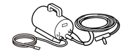 |
Equipment (Welding Type) |
 |
Equipment (Gluing Type) |
| 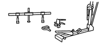 |
Pulling Jig |
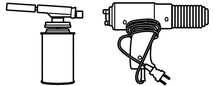 |
Heating Equipment |
|
Temperature Management Material |
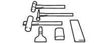 |
Hammer/Dolly |
| 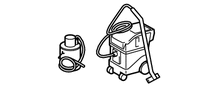 |
Explosion-proof Type Cleaning Equipment |
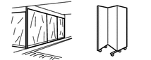 |
Work Area Partition |
NOTICE:
- If pulling repairs are performed in the same way as with steel panel repairs such as by using a sliding hammer, there is a possibility that the special pins will come off or a hole may be opened in the panel surface. Therefore, use a jig that can maintain a constant load and gradually pull out the denting using static load.
- The threshold for pulling force is weaker than steel panel repairs and it is more effective to perform pulling repairs while warming the panel (around 80°C). (Welding type only)
- When sanding the paint film, it is recommended that the speed of the sander be reduced so that substrate is not scraped, and that nonwoven paper is used (#180 or equivalent).
- Avoid looking directly at the strong light that is generated when attaching the special welding pins. And protect panel around the damaged area (painted surface, resin parts, etc.) ahead of time to counteract any spatter that may occur at the same time.
(c) Hammering repairs for broken ends
- Similar to repairs for steel panel, repairs are performed using hammers and a dolly.
- Separate the hammers and dolly to be used from the other tools, or clean (sand) them in advance to ensure that no iron particles remains on the surface when using shared tools.
- It is difficult to perform repairs when the outer and inner surfaces are peeling, or when significant plastic deformation has occurred.
|
*a |
Repair Possible Example |
*b |
Repair Not Possible Example |
<Example Equipment>
|
Heating Equipment |
|
Temperature Management Material |
|
|
Hammer/Dolly |
- |
- |
NOTICE:
- Aluminum is softer than steel. Therefore, select a hammer and adjust the amount of force appropriate for aluminum.
- Annealing in advance according to the degree of deformation and then performing work can reduce the risk of cracking in the aluminum alloy panel.
- Working while heating the panel (around 80°C) makes repair work easier.
(d) Shrinking work
- Similar to repairs for steel panel, shrinking work is used to adjust the rigidity of the panel.
- It is possible to perform this work with the same equipment used for steel panel repair, however, make sure that the electrode tip is appropriately cleaned before use.
NOTICE:
Work using an equipment setting lower than that used for steel panel repair in order to prevent damage to the aluminum alloy panel.
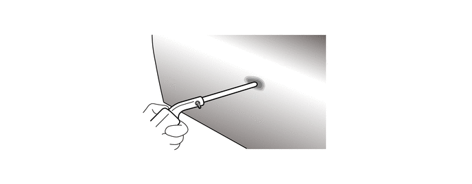<Example Equipment>
| 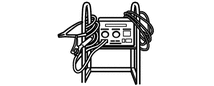 |
Shrinking Tools |
(e) Work after repairing panels
- There are no remarkable differences between the work process for steel panel repairs, however, make sure that the aluminum alloy panel surface is cleaned thoroughly so that no iron particles remain before commencing work.
- Follow the manufacturer's instructions for the materials being used.
|
*a |
Panel Repairs |
*b |
Primer Application |
|
*c |
Putty Shaping |
*d |
Primer Surfacer Application |
|
*e |
Top Coating |
- |
- |
NOTICE:
If burn marks remain on the surface of the aluminum alloy panel or if iron particles are stuck to the surface, use a stainless steel wire brush and clean the surface.